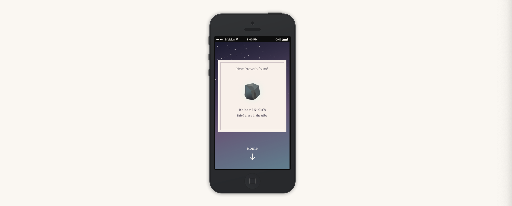

<!DOCTYPE html>
<html lang="en" class="animated fadeIn">
  <head>
    <meta charset="UTF-8" />
    <meta name="viewport" content="width=device-width, initial-scale=1.0" />
    <meta http-equiv="X-UA-Compatible" content="ie=edge" />
    <link
      rel="stylesheet"
      href="https://cdnjs.cloudflare.com/ajax/libs/animate.css/3.7.0/animate.min.css"
    />
    <link rel="stylesheet" href="style.css" />
    <title>Saphia 語言學習</title>
  </head>
  <body class="work-content page3">
    <a class="back" href="index.html#ui"></a>
    <header>
      <h1>Saphia</h1>
      <p>透過古老的諺語學習語言的美</p>
    </header>
    <div class="wrapper">
      <article>
        <p class="summary"></p>
        <div class="content">
          <h5>介紹</h5>
          <p>
            Saphia 這個字是 Sophia (智慧）跟 Sapphire
            (剛玉）兩字的組合。語言是文化的一部份，古人的智慧蘊藏其中，有如埋在石中的寶石等待被挖掘。這個
            APP
            的啟發點是由於世界各地的小眾語言都在逐漸消失，被使用者多的語言侵蝕消滅，所以希望藉由遊戲化語言學習的方式提供小眾語言的學習者更有效的工具。
          </p>

          <p>
            Saphia 的目標在於提供語言學習者、語言愛好者：
            <li>設計好的學習內容、複習制度</li>
            <li>與相同的小眾語言使用者交流的社群</li>
            <li>遊戲化機制養成每日短暫而持久的使用習慣</li>
          </p>

          <p>
            APP 的功能：
            <li>每日定量、少量的學習資料(諺語、單字等）</li>
            <li>提供聽說讀寫等不同方式的資料來學習</li>
            <li>
              學習資料有熟悉度的設定，以原石被磨成寶石的意象，分成不同程度的熟悉等級
            </li>
            <li>讓使用者社群生產與交流學習材料</li>
          </p>

          <h5>User-flow 使用流程</h5>
          <p>
            Saphia
            會在每天固定時間，跳出通知，顯示你收到了今天份的學習資料。以此作為
            APP
            的進入點，在完成今天份量的學習跟複習內容之後，份量的學習跟複習內容之後，再進行額外的探索。
          </p>
          
          <p class="caption">
            左上方為 APP 的進入點，可以在此圖中看到從開始每日學習之後的流程
          </p>

          <h5>SiteMap App 架構</h5>
          <p>
            APP的主要頁面有三個： Explore探索、Vocabs 字彙、Friends 社群。<br />
            使用者每次點開都先進入 Vocabs
            區，在這邊進行每日固定的學習。在有額外時間跟興趣時，可以到 Explore
            區，這裡有其他使用者提供的學習資料，於討論區交流，也可以在此提供自己製作的教材。
            最後，Friends
            區讓使用者知曉同好的進度，還可以送對方你感興趣的題目供對方作答。
          </p>
          
          <p class="caption">
            APP 架構圖，如上面文字所述
          </p>

          <h5>Wireframe 線框圖</h5>
          
          <p class="caption">逐漸將架構轉換成圖像介面</p>

          <h5>Mockups 高擬真設計稿</h5>
          
          <p class="caption">此為最初版本的 UI 設計稿</p>

          
          <p class="caption">最後完整的 UI 設計圖</p>

          <h5>Protytype 高擬真原型</h5>
          <p>
            此專案的 Prototype 是透過 Invision App
            製作的。點以下連結可以觀看跟操作。
          </p>
          <p>
            
            Invision App
            <a
              href="https://invis.io/A4QLEHV6JKV#/138363575_Daily_Gift"
              style="color:rosybrown"
              >原型連結</a
            >
          </p>

          <h5>Visual Design 視覺設計</h5>
          <p>
            在此專案裡，視覺設計也是我負責。為了吸引使用者，唯美、浪漫、神秘的介面是此設計必要的一部份，因此花了許多時間在探索適合的顏色組合跟字型設計上。
          </p>
          
          <p class="caption">為了此專案繪製的插畫</p>

          
          <p class="caption">探索不同字型的組合，最後採用 Roboto Slab</p>

          
          <p class="caption">研究顏色搭配</p>
        </div>
      </article>
      <!-- <aside>
        <div class="info">
          <p class="info-title">Time</p>
          <p class="info-detail">2016/05</p>
        </div>
        <div class="info">
          <p class="info-title">Media</p>
          <p class="info-detail"></p>
        </div>
        <div class="info">
          <p class="info-title">Tool</p>
          <p class="info-detail">Sketch, Invision, Principle</p>
        </div>

        </div>
      </aside> -->
    </div>
    <footer>
      <ul>
        <li><a href="index.html">Home</a></li>
        <li><a href="index.html#about">About</a></li>
        <li><a href="index.html#ui">UI</a></li>
        <li><a href="index.html#dev">Dev</a></li>
        <li><a href="index.html#talks">Talks</a></li>
        <li><a href="index.html#contact">Contact</a></li>
      </ul>
    </footer>
  </body>
</html>
